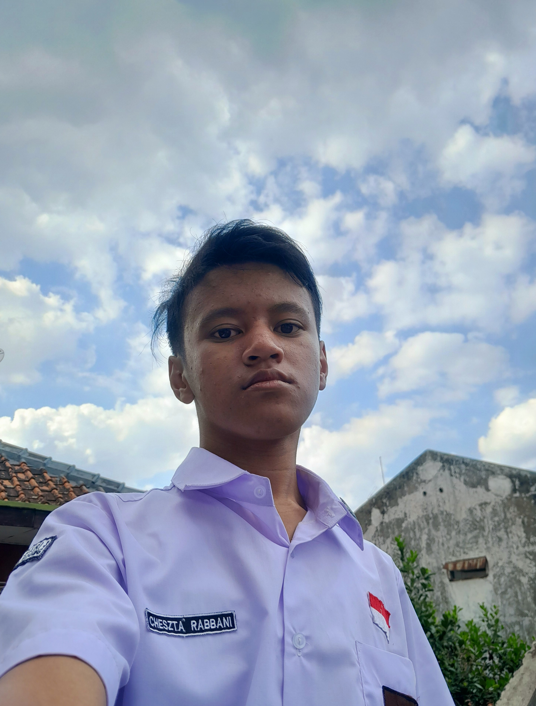
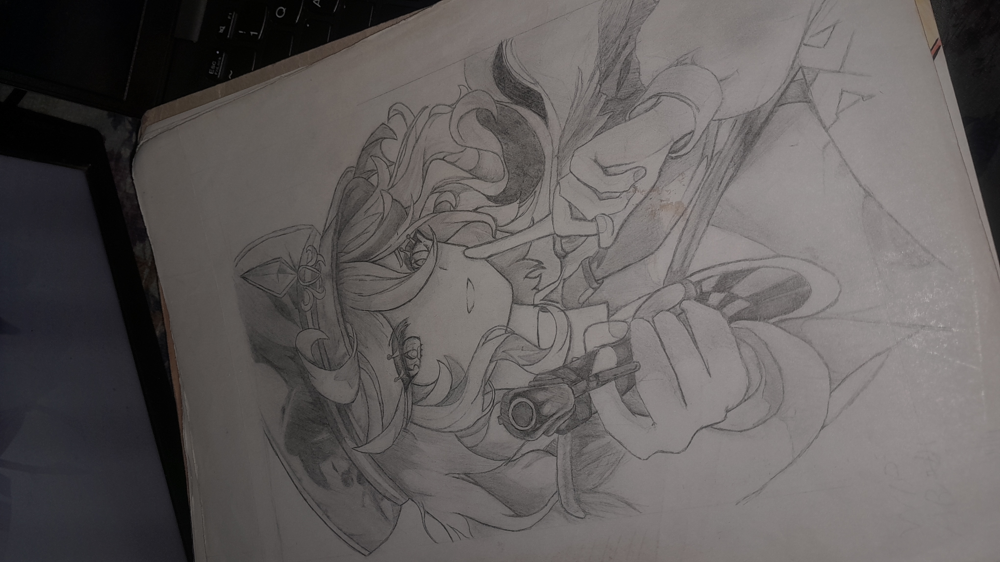
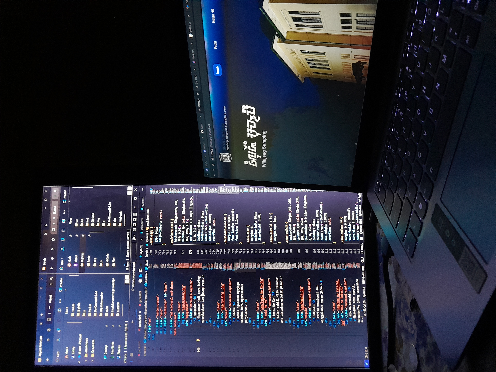

ᮒᮨᮕᮀᮊᮩᮔ᮪!
Tepangkeun!
Nami kuring Cheszta Rabbani. Kuring teh murid SMAN 3 Bandung kelas XI-9.
Website ieu jadi tempat Eksperimen, dokumentasi diajar, jeung portofolio leutik tina hal-hal anu keur dipigawé ku kuring.
Hobi Kuring

Ngagambar
Ngagambar jadi cara kuring ngungkapkeun ide jeung rasa.
Gowes
Gowes ngabantu ngajaga stamina bari ngarasakeun perjalanan.

Ngoding
Ngoding jadi cara kuring diajar logika bari nyieun hal anyar.

Nonton Film
Nonton film jadi hiburan sakaligus nambah inspirasi carita jeung visual.
Catetan Pribadi
Sunda Ceuk Kuring
Ceuk abdi mah, Sunda teh salah sahiji permata budaya Indonésia anu pinuh ku kaéndahan jeung ajén-inajén luhung. Tempatna di Pulo Jawa beulah kulon, suku ieu miboga kabeungharan tradisi anu ngawengku rupa-rupa aspék kahirupan, saperti basa, adat istiadat, kasenian jeung nikmat kuliner anu pikaresepeun kudu ati-ati. Basa Sunda anu digunakeun ku masarakatna miboga tataran basa saperti lemes, jeung kasar, anu lain ngan saukur ngeuyeuban komunikasi tapi ogé ngagambarkeun rasa hormat jeung tatakrama dina pergaulan sapopoé. Basa Sunda. adat istiadat pinuh ku harti, kalawan rupa-rupa upacara saperti seren taun anu nandakeun rasa syukur kana hasil panen, atawa ngaras dina prosesi kawinan anu ngahormat ka kolot. Masing-masing upacara ieu lain ngan saukur tradisi, tapi ogé ngabeungkeut ajén spiritual jeung sosial masarakat. Kasenian Sunda teu kurang. Heboh. Seni pintonan saperti wayang golek nampilkeun carita-carita epik Mahabarata jeung Ramayana anu dimaénkeun ku dalang kalayan kaparigelan anu luar biasa. Alat musik saperti angklung anu dijieun tina awi, geus jadi lambang karukunan anu diaku di sakuliah dunya ngaliwatan pangajén UNESCO minangka Budaya Intangible. Warisan. Ieu kasenian Sunda ngagambarkeun keseimbangan dan kedamaian yang menjadi ciri khas masyarakatnya. Tong hilap, kuliner Sunda oge nawiskeun kabeungharan rasa anu unik. Hidangan sapertos nasi liwet, karedok, sareng sagala rupa saos cabe sok disayogikeun sareng sayuran seger, nyayogikeun anu sederhana tapi pinuh. pangalaman dahar rasa. Kabeh ieu ngajadikeun kabudayaan Sunda mangrupa bagian nu teu bisa dipisahkeun tina karagaman Nusantara nu kudu terus dilestarikan.
Warta Cesa

HEBOH! Aya bajak laut mucunghul di Indonesia!
Aya kapal nu mirip Flying Dutchman katempo ngaliwat Selat Sunda. Kapal ieu disangka asalna ti Segitiga Bermuda. Jalma di luhur kapal nu diduga kaptenna kaburu kakeureut ku kamera warga nu keur motret di sabudeureun dinya.
Spotlight GoNusa
Kabeungharan Tanah Sunda
Ngalenyepan kabeungharan budaya sareng keunikan anu ngajantenkeun tanah Sunda istimewa.
Panggihan Ciri Has Jawa Barat ->